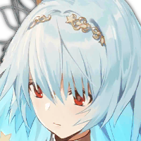

NETWORK
All the sites you need regarding GFL. Both up to date or outdated for all your needs!
GFL Gamepress - Wiki
The most up to date site regarding GFL for the casual player. Full of useful guides and data.
IOP WIKI
A database for all the Girls' Frontline games and all their regional servers, provides translated information on non-English content. Somewhat outdated but still extremely useful.
Matsuda Tips
Local angry man writes guides, analyses stuff and memes. Despite this it remains pretty useful, specially if you need help for hard chapters.

Girls' Frontline Corner
Basically what Gamepress does but extremely outdated, only useful because it contains documents and guides that are worth the read.